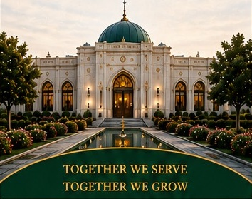
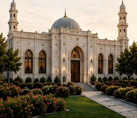
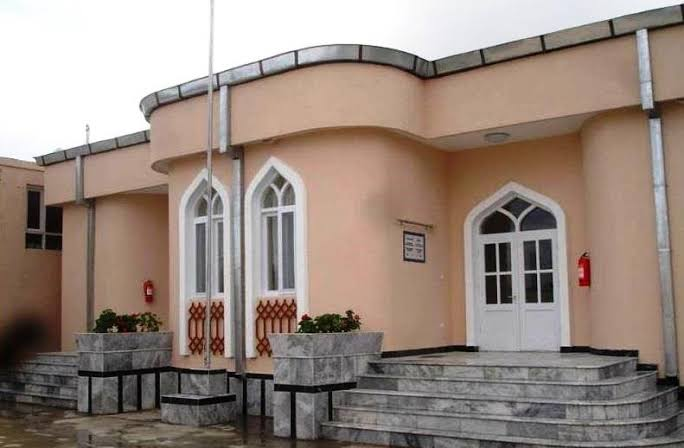
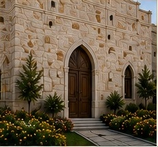
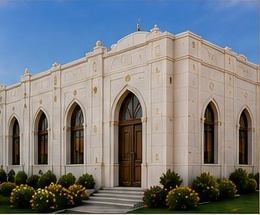

Volunteering is more than an act,
it is a connection of hearts.
At Baqirya JamatKhāna, we come
together with one purpose — to serve,
to support, and to strengthen
our community.
These pages hold the memories,
experiences and lessons from
volunteers who serve with love and
dedication for the Jamat and humanity.

Some gifts cannot be put into a box.What I received from khidmat was beyond a dream.Giving a part of your time, knowledge, and experience, and receiving something worth so much more in return, is a blessing that I will always cherish and remember.

My most cherished memories as a volunteer at Baqirya JamatKhāna began on September 20, 2024, during a Training-ship program themed “Volunteer Memories.” Serving the Jamat with passion and dedication has been a truly meaningful experience, and having the opportunity to serve during Imam’s Cycle 49 and Cycle 50 is an honor I will always treasure.
One of my most cherished memories was when we all came together, shared laughter, and enjoyed meaningful times as volunteers. That experience reminded me that Khidmat is not only about serving others, but also about building bonds, strengthening unity, and creating joy within the Jamat. It was a beautiful reminder that when we serve together with love and sincerity, the journey of Khidmat becomes even more meaningful.

My journey as a volunteer began with love for my beloved Imam and a sincere desire to serve and support others. One of my most memorable experiences was volunteering despite being unwell, while holding a heartfelt intention in my heart. That evening strengthened my faith, deepened my love for service, and inspired me to continue serving with greater dedication and sincerity.

My first volunteering experience during Volunteer Week was truly special. I felt welcomed into a new and inspiring world, where I discovered that volunteering is not only about serving others – it is also an opportunity to learn, share, grow, build skills, and contribute to the community. It was a meaningful experience and a cherished memory that I will always carry with me.
Different hearts, one purpose.
Countless moments,
beautiful memories.
Thank you to everyone who
serves selflessly for the well-being
of our Jamat.
May our unity, faith and service
always keep us together.
We may not remember
every moment,
but we remember
how it felt.
Proud to be volunteers.
Proud to be Khidmatgars.